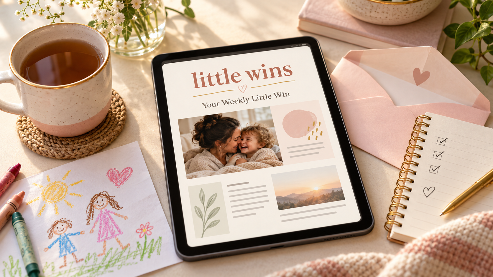

Make today feel manageable
Keep a short task list, choose a low-energy plan, and use an optional timer when it helps.
snacks, snuggles and sanity:in parenting, every little win counts
Practical answers and gentle encouragement for your family’s everyday questions.
Find a helpful answer for your child’s age and your family’s needs.
Plan today’s tasks, write down dinner, and find one age-appropriate activity—all in one place. The goal is a simple next step, not a perfect day.
Keep a short task list, choose a low-energy plan, and use an optional timer when it helps.
Explore activities, routines, and small responsibilities by age stage. Plan meals and keep grocery items together, too.
Optional Neurodivergent-Friendly Support offers adaptable sensory, communication, and planning ideas. Parenting Multiples mode adds group ideas for twins, triplets, and more.
These are flexible starting ideas you can change or skip. Multiples mode offers group planning ideas; it does not add extra child profiles.
Eighteen fun, simple recipes with a little room for choice.
Individual connection, shared logistics, and care for you while raising twins, triplets, and more.
Morning and night routines, a two-minute reset, and room to ask for support.
2026 trend inspiration, official favorites, and unisex name inspiration.
Different families, cultures, and caregiving stories deserve to feel at home here.
Support for the routines, big feelings, and everyday wins of raising a family on your own.
Explore family supportWelcoming, practical ideas for the people raising your children and the family you share.
Find your communityIdeas that leave room for your family’s traditions, language, and ways of connecting.
Explore family storiesIn parenting, a win is a win—whether it’s getting everyone fed, sharing a laugh, or making it through a hard day. Little Wins offers practical ideas and gentle encouragement to help you notice those moments, because small steps count, too.
About Little Wins
Join the waitlist for one free parenting article each week. Email delivery will begin after our email service is connected.
This collection combines everyday parenting questions with examples from published 2025 search roundups: infant sleep and spit-up, and understanding teen slang. It is not a live Google ranking or a list of measured search volumes. Read the roundup. New collections address common questions; no current search volumes have been claimed.
Health and development guides link to the American Academy of Pediatrics’ HealthyChildren.org. Each article separates a brief sourced explanation from practical ideas. These guides are general education, not a diagnosis or individualized medical advice.
The free companion app includes one child profile. Additional child profiles are part of the Family Planner package preview; subscriptions are not open yet.
Your companion plan, daily checklists, and grocery list save privately to your signed-in site account. Device drafts help recover interrupted saves. They are not community posts. Family Circle sharing remains a separate subscribed feature preview.
Try starting with three steps you already do, such as washing, brushing teeth, and a story. Adjust the checklist around your household instead of trying to complete every suggested task. Make a small plan.